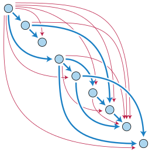

Programs Should Be Directed Acyclic Graphs
Posted on August 5, 2016
by Hakan Ozkok
One of the biggest problems in software world is that most of the people don’t really care about what would happen when their program gets bigger.

It is very dangerous to write code that has potential to change something vital in the program. (aka Side Effects!)
Let’s think about the code as a graph and make some assumptions so that;
- An expression is a node in the graph.
- Edges (connections between nodes) are the calls to other expressions inside expressions (parameters of functions).
e1(e2, e3)meanse1is connected toe2ande3.
To be continued…